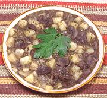

|
Kidneys in Wine SauceArgentina - Riñones en Vino Blanco | ||||
| Serves: Effort: Sched: DoAhead: |
5 main *** 1-1/8 hrs Yes |
Tender veal and lamb kidneys are very popular in Argentina - but here I've made it from beef kidneys (see Note-1). The method and other ingredients are the same, but the result is a bit different. | |||
|
2 1-1/2 9 2 1/4 1 3 1-1/2 1-1/2 1/2 1/4 |
# c oz # c T T T c t t |
Kidneys (1) Wine Vinegar, white Onion Potatoes (2) Parsley, flat Sage, fresh Olive Oil Olive Oil (more) White Wine, dry Salt Pepper |
Prep - (55 min)
|